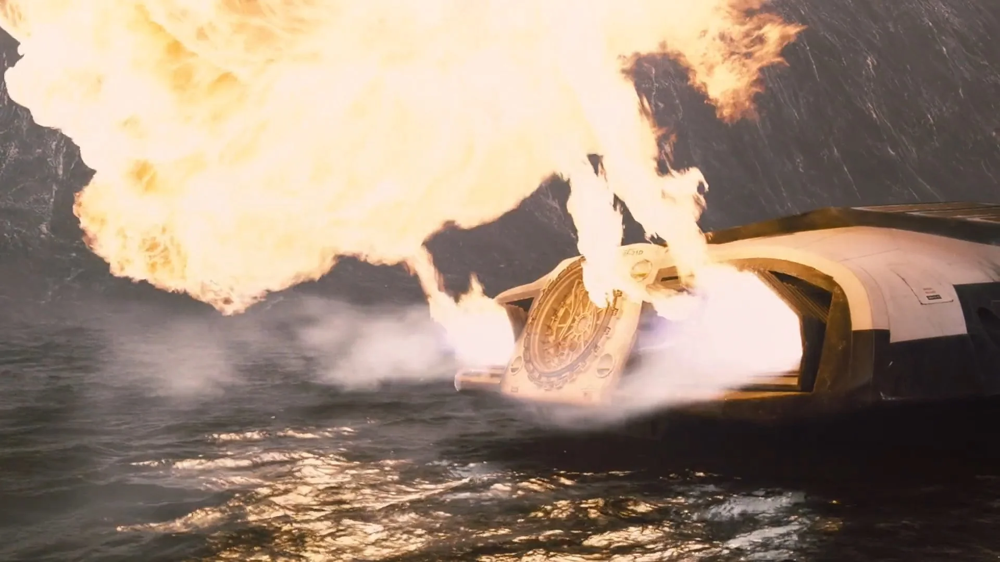
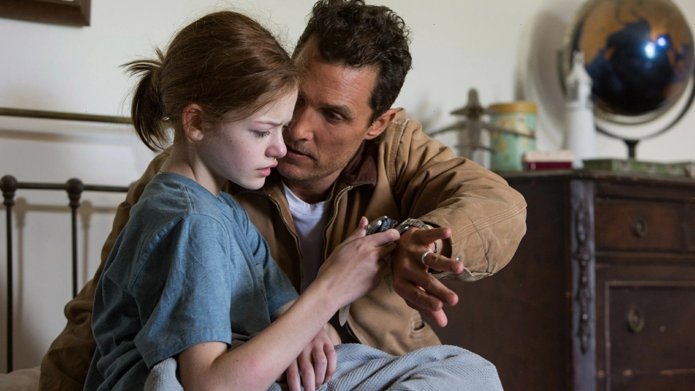
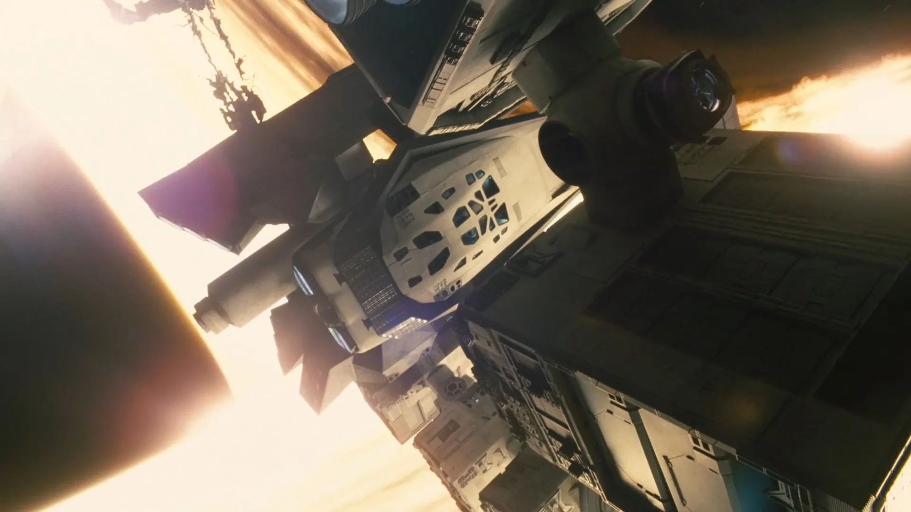
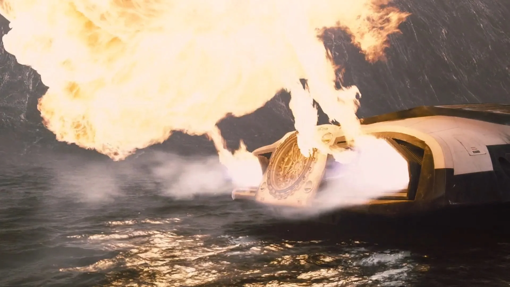
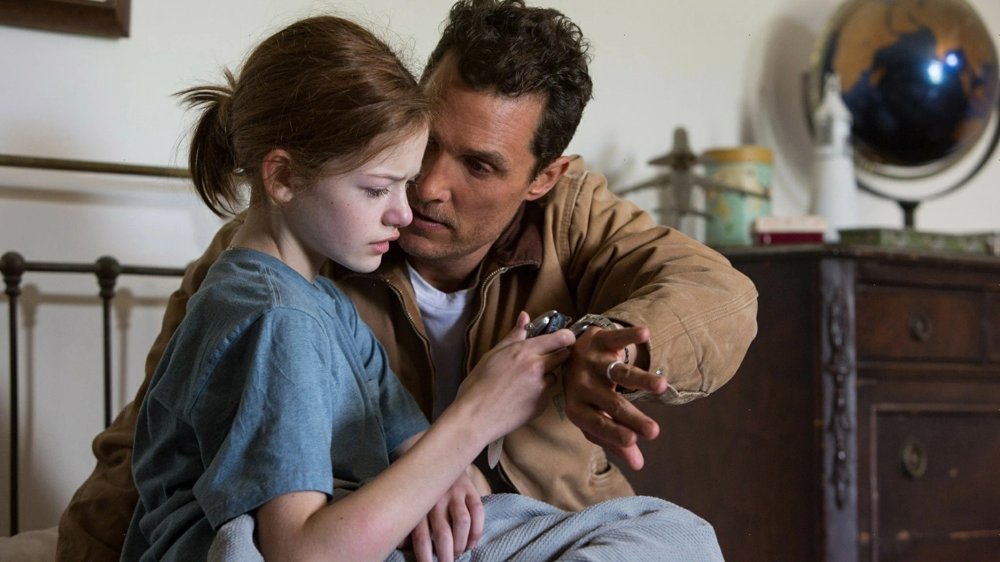
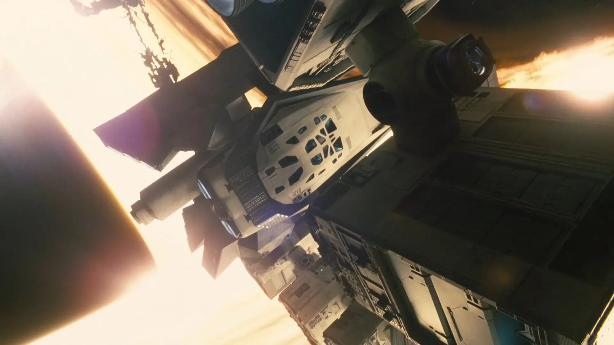

INTERESTELAR
Dirigida por Christopher Nolan y estrenada en 2014, Interstellar no solo destaca por su narrativa
épica y sus efectos visuales revolucionarios, sino también por su enfoque innovador en el sonido y la
música, elementos clave para sumergir al espectador en su universo cósmico. Desde la banda sonora de Hans
Zimmer hasta el tratamiento científico del sonido, cada detalle fue cuidadosamente planificado para crear
una experiencia sensorial única.
Nolan le entregó a Hans Zimmer un relato breve en lugar del guion completo sobre un padre que
abandona a su hijo para salvar a la humanidad. Inspirado por esta idea emocional, Zimmer compuso la
música sin ver la película, basándose únicamente en conceptos abstractos como el amor, el tiempo y la
exploración. El resultado fue una partitura monumental, donde el órgano de iglesia se convirtió en el
instrumento protagonista.
 





El Órganon Harrison & Harrison: Grabado en el Temple Church de Londres, su sonido profundo y
vibrante
evoca lo sagrado y lo infinito, conectando lo humano con lo cósmico. Zimmer lo combinó con una orquesta
de 90 músicos para crear piezas icónicas como "Cornfield Chase" y "No Time for Caution".
Silencio en el Vacío: Como en 2001: Odisea del espacio, las escenas en el espacio exterior
carecen de sonido, pero los efectos dentro de la nave (explosiones, motores) se transmiten como
vibraciones mecánicas, dando una sensación de inmersión. El Rugido de Gargantúa: El sonido del agujero
negro se diseñó a partir de ecuaciones de ondas gravitacionales, mezclando frecuencias ultra-bajas con
distorsiones orgánicas.
El Reloj de Murph: El tic-tac que guía a Cooper fue creado manipulando grabaciones de un reloj
de péndulo real, simbolizando el tiempo y la conexión entre padre e hija.